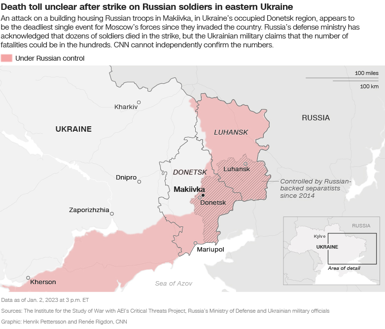

‘I thought I would die on that boat’: Mother recalls the horror of month adrift at
sea
Hatemon Nesa weeps as she clings to her 5-year-old daughter, Umme Salima, at a rescue
shelter in Indonesia’s Aceh province. Their faces appear gaunt, their eyes sullen, after drifting
for weeks at sea on a boat with little food or water.
“My skin was rotting off and my bones were visible,” Nesa said. “I thought I would die on that
boat.”
Nesa also cries for her 7-year-old daughter, Umme Habiba, who she says she was forced to leave
behind in Bangladesh – she couldn’t afford any more than the $1,000 the traffickers demanded to
transport her and her youngest child to Malaysia. “My heart is burning for my daughter,” she said.
Nesa and Umme Salima were among around 200 Rohingya, members of a persecuted Muslim minority, who
embarked on the dangerous voyage in late November from Cox’s Bazar, a sprawling refugee camp in
Bangladesh crowded with around a million people who fled alleged genocide by the Myanmar military.
It was a rare embrace between one of Israel’s most controversial politicians and an
Arab ambassador. Itamar Ben Gvir and the United Arab Emirates’ Ambassador to Israel Mohamed Al Khaja
clutched each other’s hands in a warm greeting in Tel Aviv in early December.
“Birds of a feather flock together,” wrote a columnist in Israel’s left-leaning Haaretz newspaper,
arguing that the Abraham Accords, which saw Israel gain recognition from four Arab states including
the UAE in 2020, did little to moderate Israel’s position on the Palestinians. Ben Gvir, he said,
was “a superstar in the UAE.”
Israel on Thursday swore in what is likely to be the most right-wing government in its history, led
by six-time Prime Minister Benjamin Netanyahu. Ben Gvir, an extremist who has been convicted for
supporting terrorism and inciting anti-Arab racism, became national security minister. Bezalel
Smotrich, who supports abolishing the Palestinian Authority and annexing the West Bank, became
finance minister.

It's mid-afternoon in Kyiv. Here's what you need to know.
Recriminations over an attack which killed at least dozens of Russian troops in
occupied Makiivka continue Wednesday. Russia's Ministry of Defense blames soldiers' use of personal
cellphones for the attack, but a prominent Russian blogger has called the official line "not
convincing."
Meanwhile, the leader of Russia's Wagner private military company has said its forces have failed to
take the city of Bakhmut in eastern Ukraine because there is "a fortress in every house."
Here are the latest headlines:
Russia blames troops for Makiivka strike: The "mass use" of cell phones by military personnel was
the "main cause" of the strike that killed scores of Russian troops in eastern Ukraine on New Year's
Day, according to Russia’s defense ministry. The ministry said the use of cell phones by military
personnel led to the detection of the location for the apparent Ukrainian strike.
Pro-Russian leader praises Makiivka troops: The leader of the self-declared Donetsk People’s
Republic in eastern Ukraine praised the bravery of Russian soldiers killed in a Ukrainian strike on
the occupied city of Makiivka. “We know, and we know firsthand, what it is to suffer losses,” Denis
Pushilin said on Telegram Wednesday morning. “Based on the information I have, I can say with
certainty that there were many displays of courage and real heroism by the guys in this regiment!”
Portuguese superstar Cristiano Ronaldo was officially unveiled by his new Saudi
Arabian club Al Nassr on Tuesday in Riyadh, explaining he made the move having “won everything” in
Europe.
Ronaldo will earn an estimated $200 million a year with Al Nassr, according to Saudi state-owned
media.
“I’m so proud to make this big decision in my life, in football. As you mentioned before, in Europe
my work, it’s done. I won everything,” the five-time Ballon d’Or winner said. “I played the most
important clubs in Europe and for me now, it’s a new challenge.”
‘Pragmatic’ and ‘workaholic’
Thu, who is now the highest-profile Tesla executive after Musk, has played a huge role
in helping the company rebound strongly from Covid lockdowns in China, the carmaker’s biggest
international market.
His reported appointment comes at a time when Musk has been distracted by his acquisition of
Twitter, and Tesla’s stock has plunged 65% in 2022.
While Tesla did not respond to requests for comment by CNN, Chinese media has been speculating since
December that Zhu was being groomed for a bigger global role at the electric automaker.
“Zhu is a core leader at Tesla and a linchpin to its success especially in China,” said Daniel Ives,
managing director and senior equity research analyst covering the tech industry at Wedbush
Securities.
For centuries, medieval castles -- hulking, isolated triumphs of masonry -- have held
a special place in the Western imagination, evoking at once a sense of history, fantasy, war and
romance. They are the perennial backdrops for period dramas and children's books, travel brochures
and fashion spreads.
But in his latest book, "Stone Age: Ancient Castles of Europe," writer and photographer Frédéric
Chaubin set out to disrupt the familiar stereotypes, using prose and photography to link the
medieval with the Modernist.
"Instead of just considering them as historical remains, I was much more interested in building a
link between this very primitive architecture and the basics and principles of Modernism, which were
more or less set up at the beginning of the 20th century through theoretical works by Adolf Loos or
Le Corbusier," he explained in a phone interview, referring to the influential theorists and
architects who lobbied against ornamentation and venerated clean shapes."(The principle) that form
follows function is perfectly expressed in this very, very primitive architecture."
Gabrielle Union ‘felt entitled’ to infidelity during first marriage
Gabrielle Union is sharing more about her first marriage that she describes as
“dysfunctional from day one.”
During a recent conversation on the podcast “Armchair Expert with Dax Shepard,” the actress and
author talked about being married to former professional football player Chris Howard, whom she
divorced in 2006 after five years of marriage.
Shepard mentioned feeling guilty about his own past infidelities and Union allowed that she was not
“getting wife of the year awards” when it came to her marriage to the ex-Jacksonville Jaguars
player.
Brexit has cracked Britain’s economic foundations
It’s been two years since former Prime Minister Boris Johnson signed his Brexit trade
deal and triumphantly declared that Britain would be “prosperous, dynamic and contented” after
completing its exit from the European Union.
The Brexit deal would enable UK companies to “do even more business” with the European Union,
according to Johnson, and would leave Britain free to strike trade deals around the world while
continuing to export seamlessly to the EU market of 450 million consumers.
In reality, Brexit has hobbled the UK economy, which remains the only member of the G7 — the group
of advanced economies that also includes Canada, France, Germany, Italy, Japan and the United States
— with an economy smaller than it was before the pandemic.
Years of uncertainty over the future trading relationship with the European Union, Britain’s largest
trading partner, have damaged business investment, which in the third quarter was 8% below
pre-pandemic levels despite a UK-EU trade deal being in place for nearly two years.
And the pound has taken a beating, making imports more expensive and stoking inflation while failing
to boost exports, even as other parts of the world have enjoyed a post-pandemic trade boom.
‘Gifted’ Damar Hamlin is a ‘great human being,’ says former college teammate
Damar Hamlin’s former high school and college teammate John Petrishen said the Buffalo Bills
safety’s work ethic is matched by him being a “good person.”
Petrishen, who played with Hamlin at both Pittsburgh Central Catholic and the University of
Pittsburgh, told CNN that as well as being “gifted” on the field, Hamlin is a “great human being.”
“People tend to forget that underneath the helmet and the jersey is a human being and Damar Hamlin
is a great human being,” Petrishen said. “I played with him for three years at high school and then
for two years in college.